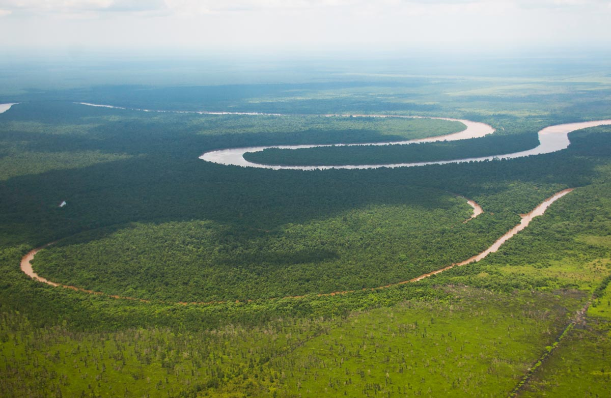
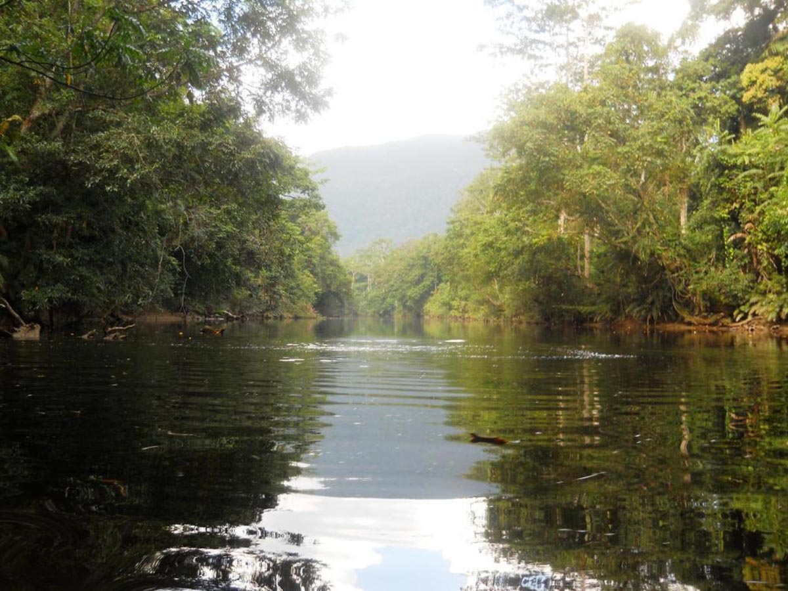

Klappe auf, Affe raus!? Ganz so einfach ist es leider nicht. Eine erfolgreiche Auswilderung durchläuft drei Phasen: Das Pre-Release, Release und Post-Release Monitoring.
Zunächst müssen die Orang-Utans die Freiheit „üben“ - auf künstlich angelegten oder natürlichen Flussinseln, nahe oder innerhalb der BOS Rettungsstationen. Nachdem sie jahrelang auf ein Leben in der Wildnis vorbereitet wurden, überlassen wir sie dort erstmals sich selbst. Während dieser Pre-Release-Phase werden die Tiere regelmässig überwacht, aber nur noch zweimal täglich zugefüttert. Erst wenn Sie sich auf den Übungsinseln bewährt haben, können sie guten Gewissens in die Freiheit entlassen werden.
Für die eigentliche Auswilderung, das Release, muss in der Zwischenzeit ein geeignetes Gebiet gefunden werden, dessen Schutz langfristig gewährleistet ist. Das ist alles andere als einfach. Verhandlung über Nutzungsrechte mit Behörden oder der ansässigen Bevölkerung ziehen sich oft über Jahre hin. Lange war der Mangel an sicheren Waldgebieten der Grund dafür, dass die BOS Stiftung (BOSF) nicht auswildern konnte. Erst 2010 konnte über ein eigens dafür gegründetes Privatunternehmen (PT. RHOI) eine Naturschutz-Konzession für ein Regenwaldgebiet in Ost-Kalimantan erworben werden. Das 860 km² große Waldgebiet mit dem Namen Kehje Sewen (KJ7) ist weitgehend unberührt und steht nun bis zu 90 Jahre lang der BOSF als Schutz- und Auswilderungsgebiet zur Verfügung. Darüber hinaus nutzt die BOSF bestehende Schutzgebiete in Zentral-Kalimantan für Auswilderungen: Bukit Batikap und den Nationalpark Bukit Baka Bukit Raya (BBBR NP). Vereinbarungen mit Konzessionshaltern wie z.B. Palmölkonzernen oder Holzfirmen werden ebenfalls getroffen. Auch sie stellen ungenutzte Areale für Pre-Release Aktivitäten oder Auswilderungen zur Verfügung.
Im Anschluss an die tatsächliche Auswilderung findet dann das so genannte Post-Release Monitoring statt. Implantate erlauben uns, die Orang-Utans in den ersten Wochen nach ihrer Auswilderung per Radio-Antenne zu orten und intensiv zu überwachen. Bis zu drei Jahre lang kann das BOSF Feldteam in enger Zusammenarbeit mit Wissenschaftlern und Orang-Utan Experten auf diesem Weg das Wohlergehen und das Verhalten der ausgewilderten Tiere kontrollieren und studieren.
{% include leaves.svg %}
Freiheit üben: Pre-Release Aktivitäten
Für unsere Pre-Release Aktivitäten nutzen wir i.d.R. Flussinseln, die für regelmässige Kontrollen gut zugänglich sind (d.h. nahe oder innerhalb unserer Rettungsstationen liegen). Die Auswilderungskandidaten können über das Wasser nicht entkommen und dort einige Wochen vor ihrer Auswilderung die Freiheit üben. Den „Inselbewohnern" bieten wir so ein natürliches Umfeld, in dem sie sich im Nestbau üben oder selbständig nach wilden Früchten suchen können. Pfleger bringen nur noch zweimal am Tag zusätzliches Futter und überwachen die Auswilderungskandidaten. Durch das Zusammenleben mit anderen Orang-Utans auf der Insel lernen die Tiere ausserdem voneinander.
Im Falle unserer Rettungsstation in Samboja Lestari (in Ost-Kalimantan) mussten künstliche Pre-Release Inseln angelegt werden. Unsere zweite Rettungsstation in Nyaru Menteng unterhielt bereits vier kleine Pre-Release Inseln (die Platz für max. 90 Orang-Utans boten), als die BOSF im Februar/März 2015 eine weitere natürliche Flussinsel als Übungsgebiet dazugewinnen konnte. Das 655 ha grosse Gebiet auf der Insel „Salat Island“ ist nur eineinhalb Stunden mit dem Auto von der Rettungsstation in Nyaru Menteng entfernt und vom nächsten Dorf aus per Boot innerhalb von 30 Minuten erreichbar. Auch die Vegetation der Insel ist viel versprechend: 19 der 26 ansässigen Pflanzenarten gehören zum festen Speiseplan der Orang-Utans.

Mittlerweile ist es gelungen, die letzten bürokratischen Hürden vor Ort aus dem Weg zu räumen. Ausserdem konnte das Übungsgebiet im Oktober 2016 durch eine Zuwendung der RSPO zertifizierten Firma PT. Sawit Sumbermas Sarana (SSMS) um eine riesige Fläche erweitert werden. Der BOS Stiftung stehen dort nunmehr 2,089 ha für Pre-Release Aktivitäten zur Verfügung – eine Fläche, die zeitgleich bis zu 200 Orang-Utans einen ersten Vorgeschmack auf die Freiheit geben kann. Auch eine Gruppe kranker und körperlich beeinträchtigter Orang-Utans, die nicht mehr ausgewildert werden können, findet auf Salat Island eine neue Heimat.
Innerhalb von nur wenigen Wochen wurden Ende 2016 vier Fütterungsplattformen und zwei Anlegestege errichtet, ein kleines Büro im Dorf Pilang aufgebaut und drei Motorboote für den Transport der Tiere erworben. Auch eine schwimmende Ranger Station wurde gebaut, die per Boot dorthin bewegt werden kann, wo sie tatsächlich benötigt wird. Anfang November 2016 konnten die ersten 12 Orang-Utans (7 Weibchen und 5 Männchen) nach Salat Island umziehen. Sie werden permanent von BOS Mitarbeitenden überwacht und es geht ihnen soweit sehr gut. Bis August 2017 plant die BOS Stiftung u.a. den Bau zusätzlicher Fütterungsplattformen, den Ausbau der Kanäle und den Erwerb eines Geländewagens und weiterer Boote. In naher Zukunft werden wir also mit Sicherheit den Transfer vieler Orang-Utans nach Salat Island beobachten dürfen, die gründlich auf diesen Moment vorbereitet wurden und lange darauf gewartet haben!
Nicht nur die Orang-Utans müssen für die Auswilderung parat sein. Es braucht auch passende Waldgebiete - kein einfaches Unterfangen, denn nicht jeder Regenwald ist für Orang-Utan Auswilderungen geeignet. Zunächst schätzt ein BOS Expertenteam die Qualität und Aufnahmekapazität eines potentiellen Auswilderungsgebietes ab. Mittels Satellitenbildern und Konzessionskarten wird nach Habitattypen, Waldanteilen, Baumbestand, Höhenlagen (Orang-Utans leben kaum oberhalb von 900 Meter Höhe), Landnutzungsarten, Besitzverhältnissen und Infrastruktur kartiert. Für die Auswilderung von Orang-Utans müssen folgende Mindestanforderungen erfüllt sein: Das Gebiet muss gross genug und langfristig geschützt sein, es darf keine größere Orang-Utan-Population vorhanden sein, der Wald muss im ursprünglichen Verbreitungsgebiet der jeweiligen Unterart liegen und es muss genügend Nahrung (d.h. vor allem Flügelfruchtbäume) geben.
In einem nächsten Schritt müssen die Besitzverhältnisse geklärt werden. Die BOSF tritt mit den Konzessionshaltern (d.h. mit Holzfirmen, Palmölkonzernen oder der lokalen Bevölkerung) in Verhandlungen oder nimmt Kontakt mit staatlichen Behörden auf, um in bestehende Schutzgebiete auszuwildern oder eigene Schutzkonzessionen zu erwerben. Allen politischen Ebenen (von der Zentral- bis zur Bezirks-Regierung) muss das Projekt nahe gebracht werden und die erforderlichen Genehmigungen eingeholt werden.
Unverzichtbar ist auch die rechtzeitige Aufklärung lokaler Vertreter, denn ohne die Zustimmung der Menschen vor Ort wären Auswilderungen zum Scheitern verurteilt. Die BOSF klärt vorab, wo Interessenskonflikte entstehen könnten. Ausserdem unterstützen wir die ansässigen Dorfgemeinschaften dabei, nachhaltige und umweltverträgliche Einkommensquellen zu schaffen, sowie Gesundheits- und Bildungsprojekte, Umwelt- oder Naturschutzvorhaben umzusetzen. So entstehen Partnerschaften, die den langfristigen und nachhaltigen Erfolg der Auswilderungen sichern.
Sind die Auswilderungsgebiete identifiziert und gesichert, muss dort die nötige Infrastruktur aufgebaut werden. Dazu gehören ein kleines Büro in der nächstgrößeren Stadt, eine Forschungs- und Basisstation, Zugangswege, der Kauf oder das Anmieten von Fahrzeugen, sowie die Anschaffung und Installation von Kommunikationseinrichtungen. Außerdem muss für alle anfallenden Tätigkeiten qualifiziertes Personal eingestellt und teilweise ausbildet werden.
Unterstützen Sie uns bei diesen Vorbereitungen für die Auswilderungen, spenden Sie für unsere Pre-Release Aktivitäten oder werden Sie anderweitig aktiv!
{% include action-buttons.html %}
{% include leaves.svg %}
Auswilderungen
Wenn sich die Orang-Utans auf den Pre-Release Inseln bewährt haben, gesund sind und Auswilderungsgebiete zur Verfügung stehen, kann die eigentliche Auswilderung in die Wege geleitet werden. Diese orientiert sich an den Richtlinien der International Union for Conservation of Nature and Natural Resources (IUCN) und erfolgt unter strenger veterinärmedizinischer Kontrolle. Die Orang-Utans werden betäubt und von der Station mit einem Fahrzeug, per Boot und/oder Helikopter in die entlegenen Auswilderungsgebiete gebracht. Oberstes Gebot ist, den Stress für die Orang-Utans so gering wie möglich zu halten und zu verhindern, dass sich die Tiere verletzen oder gar krank werden. Bei den Auswilderungen arbeiten BOSF Mitarbeiter, Tierärzte, Primatologen und Biologen eng miteinander zusammen. Sie bestimmen auch, wie die Gruppe der Auswilderungskandidaten zusammengesetzt sein wird, d.h. wie viele Tiere und wer mit wem ausgewildert werden kann.
Unsere Rettungsstation in Samboja Lestari (Ost-Kalimantan) nutzt den Kejeh Sewen Forest (KJ7) als Auswilderungsgebiet. Der BOS Rettungsstation in Nyaru Menteng (Zentral-Kalimantan) stehen zwei Schutzgebiete für Auswilderungen zur Verfügung: Bukit Batikap und der BBBR Nationalpark. Seit dem Neustart der Auswilderungen im Jahr 2012 haben knapp 250 Orang-Utans in diesen drei Auswilderungsgebieten eine neue Heimat gefunden.

Die Kosten einer einzigen Auswilderung beziffert die BOSF mit ca. 10.000 CHF. Dieser Betrag beinhaltet die medizinische Vorbereitung der Orang-Utans auf die Auswilderung (u.a. Gesundheitschecks und das Einsetzen von Implantaten für die spätere Überwachung), die Versorgung der Tiere mit Nahrungsmitteln während des oft tagelangen Transportes, die Verpflegungs- und Übernachtungskosten sowie die Gehälter der involvierten Tierärzte, Pfleger und Träger, die notwendigen Medikamente (u.a. Betäubungsmittel und Notfallausrüstung), den Transport per Auto oder LKW, Flugzeug, Helikopter und/oder Boot etc. Wenn Sie dieses sehr kostspielige Unterfangen unterstützen möchten, spenden Sie jetzt oder abonnieren Sie unsere Printmedien. Wir halten Sie gerne über die aktuellen Vorhaben und Auswilderungskandidaten auf dem Laufenden!
{% include action-buttons.html %}
{% include leaves.svg id="" %}
Freiheit überwachen: Post-Release Monitoring
Vor allem in den ersten sechs Wochen nach der Freilassung, mindestens ein Jahr lang und maximal für zwei bis drei Jahre überwachen wir die ausgewilderten Orang-Utans. Aktuell setzen wir dafür Radiotechnologie ein. Jedem Tier wird ein Transmitter in die Nackenfalte implantiert, welcher ein Signal aussendet. Das Signal wird von einem Empfänger entgegen genommen und per Antenne vom BOSF-Feldteam lokalisiert.
Über Wochen verfolgt das Team die ausgewilderten Orang-Utans und erhebt dabei Daten, die Rückschlüsse auf ihr Wohlergehen zulassen: Wieviel Zeit verbringt das Tier schlafend oder essend? Welche Nahrung nimmt es wann zu sich? Wieviel Strecke legt es zurück, interagiert es sozial und wie ist sein/ihr Reproduktionsverhalten? Aus diesen Informationen können die BOSF Mitarbeiter und die Wissenschaftler, die den Auswilderungsprozess begleiten, ablesen, welchen Einfluss die Auswilderungen auf das Ökosystem haben. Zudem können sie feststellen, ob ein Tier in der Lage ist, sich in der freien Wildbahn selbständig zu ernähren, ob das Nahrungsangebot ausreicht, ob das Tier zu- oder abnimmt, gesund oder krank ist. Ist Letzteres der Fall, müssten Tiere gegebenenfalls zurückgeholt und medizinisch behandelt werden. Kristallisiert sich hingegen ein permanenter Aufenthaltsort heraus, ist das gerade bei Weibchen ein gutes Zeichen: Sie scheinen ihr neues Zuhause akzeptiert zu haben.
Die so gewonnenen Erkenntnisse werden für zukünftige Auswilderungen genutzt und wenn nötig Strategien angepasst. Ausserdem gilt: Nur wenn wir wissen, welche Tiere die besten Überlebenschancen haben, können wir unsere Vorbereitung auf die Auswilderungen (d.h. die Pre-Release Aktivitäten) entsprechend optimieren. Zu guter Letzt kontrollieren wir nicht nur das Wohlbefinden der ausgewilderten Tiere, sondern auch die Auswilderungsgebiete selbst. Gefahren wie z.B. illegaler Holzeinschlag oder Wilderei werden so eher entdeckt. Auch die abschreckende Wirkung dieser Überwachungstätigkeit sollte nicht unterschätzt werden.
Unser Post-Release Monitoring deckt aktuell riesige Auswilderungsgebiete an allen drei Standorten ab: in Bukti Batikap und im BBBR National Park (Zentral-Kalimantan) sowie in Kejeh Sewen (Ost-Kalimantan). Die Signale der Sender haben eine Reichweite von 400 Metern bis 5 Kilometern – je nachdem wie stark bewaldet und hügelig das Land ist. Mit den personellen und technischen Ressourcen, die uns zur Verfügung stehen, schaffen wir es gerade, knapp 250 ausgewilderte Orang-Utans zu überwachen (Stand Ende 2016).
Unser Post-Release Monitoring ist ein sehr beschwerlicher und personalintensiver Prozess. Über Monate und bei jedem Wetter folgen unsere Teams den Orang-Utans durch den dichten Regenwald. Insgesamt beschäftigt die BOSF dafür 40 Monitoring Agents. Hinzu kommen Voluntäre, Koordinatoren und unterstützendes Personal wie z.B. Köche. Nebst den Kosten für die technischen Geräte (Implantat/Sender, Empfänger und Antennen) fallen auf Grund der extremen Wetterbedingungen vor Ort erhebliche Kosten für deren Unterhalt an. Oft lassen sich notwendige Reparaturen nur im Ausland (beim Hersteller, u.a. in den USA) durchführen, was nicht nur teuer sondern auch mit langen Wartezeiten verbunden ist.
Orang-Utans werden schon länger auch von anderen Organisationen ausgewildert. Mit ihrem sehr ausgefeilten Auswilderungsprogramm hat die BOSF aber Neuland betreten und nimmt mittlerweile eine Vorreiterrolle unter den Primatenschutzprogrammen ein. Der kostspielige Aufwand hat sich gelohnt: In den letzten Jahren konnten bereits hunderte Orang-Utans in die Freiheit entlassen werden. Ihre Chancen es zu schaffen stehen nicht schlechter als die ihrer Artgenossen in freier Wildbahn (mit einer natürlichen Sterberate von ca. 5%). Bis heute wissen wir von sechs Babies, die von ausgewilderten Orang-Utan Weibchen in Freiheit geboren wurden. Sie sind der grösste Stolz der BOS Familie!
Bitte spenden Sie für unser Post-Release Monitoring oder unterstützen Sie uns anderweitig! Nur mit Ihrer Unterstützung können wir weitere Auswilderungsgebiete sichern und überwachen, die Orang-Utans in unserer Obhut optimal auf ein Leben in Freiheit vorbereiten und die sehr kostspieligen Auswilderungen durchführen.
{% include action-buttons.html %}
{% include leaves.svg id="" %}
Zuverlässige Partner in Indonesien und der Schweiz
Bei der Vorbereitung, der Durchführung und der Überwachung unsere Aktivitäten im Bereich Auswilderungen sind wir auf eine gute und zuverlässige Zusammenarbeit mit nationalen und internationalen Partnern angewiesen. Hierzu gehören staatliche und private Institutionen genauso wie wissenschaftliche Einrichtungen, z.B. die zuständigen Naturschutzbehörden Zentral- und Ostkalimantan’s, die Tuanana Orangutan Research Station (eine Kooperation der BOSF mit der Universität Zürich, der Rutgers University und der National University of Jakarta) oder wissenschaftliche Berater wie Simon Husson von der Borneo Nature Foundation/OuTrop.
Die wissenschaftlichen Erkenntnisse aus dem Post-Release Monitoring und die praktischen Erfahrungen, die wir bei jeder Auswilderung sammeln, fließen in zukünftigen Vorhaben ein. Sie helfen uns letztlich, die Orang-Utans besser auf die Freiheit vorzubereiten und ihre Überlebenschancen in freier Wildbahn richtig abzuschätzen.
In den Rettungsstationen warten hunderte Orang-Utans auf die Freiheit. Alle Fähigkeiten, die sie für ein Überleben in freier Wildbahn benötigen, haben sie sich in einem jahrelangen Prozess angeeignet. Viele von ihnen haben sich bereits auf den Übungsinseln bewährt. Doch anstatt selbständig ihr Futter in Freiheit zu suchen und das Gelernte anzuwenden, sind sie weiter auf den Menschen angewiesen und leben in Gruppen in grossen Sozialisierungskäfigen. Diese „fertigen“ Orang-Utans müssen so schnell wie möglich ausgewildert werden, damit sie das Erlernte nicht wieder verlernen. Auf Seiten der BOSF wurden in den letzten Jahren praktische Erfahrungen gesammelt und die notwendigen personellen Ressourcen aufgebaut, um die aufwendigen Auswilderungen durchzuführen. Alle Abläufe sind optimiert. Helfen Sie uns jetzt, die benötigten finanziellen Mittel bereit zu stellen und die Früchte unserer Anstrengungen in den Bereichen Rettung- und Rehabilitation zu ernten!
Auswilderungen unterstützen wir mit eingeworbenen Stiftungsgeldern oder über Spendeneinnahmen. Seit dem Neustart der Auswilderungen 2012 konnten alle Auswilderungen nach KJ7 über Stiftungsgelder aus der Schweiz finanziert werden. Unsere Partnerorganisationen haben das Gesamtprojekt KJ7 ebenfalls mit Spendeneinnahmen unterstützt. Bitte helfen auch Sie uns, den Orang-Utans ihre Freiheit zu schenken!
{% include action-buttons.html %}
{% include leaves.svg id="" %}
Vertiefte Informationen
Wenn Sie auf dem Laufenden gehalten werden wollen zu den anstehenden Auswilderungen, unseren Pre-Release Aktivitäten oder Entwicklungen im Post-Release Monitoring, registrieren Sie sich hier mit Ihrer E-Mail Adresse. Sie bekommen dann regelmässig unsere Orang-Utan News und Mailings zugestellt.


%20BOS_0558%20copy%20%20-%20Indrayana.jpg)